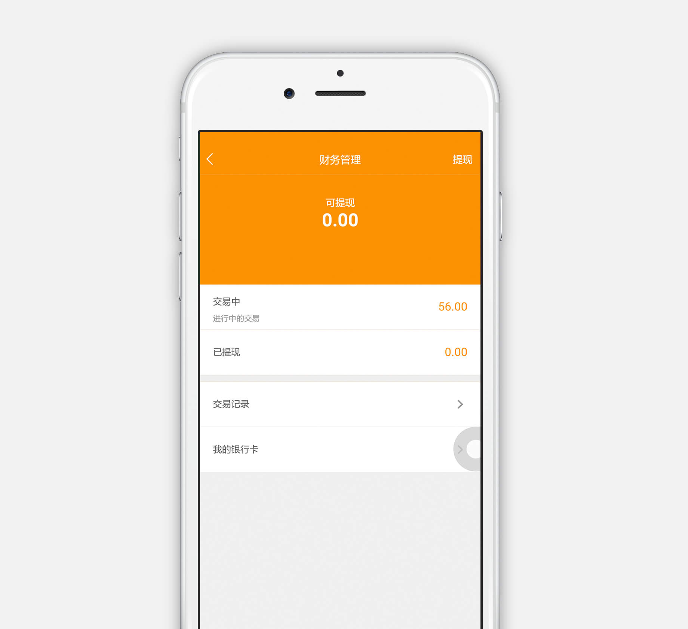

<ion-header>
  <ion-navbar hideBackButton="true">
    <ion-buttons left>
      <button ion-button clear icon-only color="black" (click)="goBack()">
        <ion-icon name="arrow-back"> </ion-icon>
      </button>
    </ion-buttons>
    <ion-title>如何提现</ion-title>
  </ion-navbar>
</ion-header>
<ion-content>
<div class="txt">如何提现：<br>点击【财务管理】添加银行卡，输入提款金额就可以提交了。你也许会发现，在买家付款后，您赚的钱都是在未结算里面，别担心，这是为了避免买家申请维权退货退款。供货方发货14天后，如果用户没有点击确认收货，系统默认自动收货，收货后7天售后维权期过后，订单金额转化为已结算，方可提现。提现金额单次需要大于50元且小于“可提现金额”，由于各银行实际业务流程不同收款时间一般在转出后的2-3个工作日完成。</div>
<div class="img">
	
</div>
</ion-content>